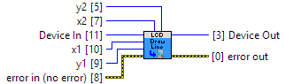

flush.
Device Support:1202_0 (ver: 100) Text LCD : Unsupported
1202_0 (ver: 120, 121) Text LCD : Unsupported
1202_1 (ver: 123, 124) Text LCD : Unsupported
1203_0 (ver: 100) Text LCD : Unsupported
1203_0 (ver: 120, 121) Text LCD : Unsupported
1203_1 (ver: 123, 124) Text LCD : Unsupported
1202_2 (ver: 200, 201, 202, 203, 204) Text LCD : Unsupported
1203_2 (ver: 200, 201, 202, 203, 204) Text LCD : Unsupported
1204_0 (ver: 100, 101) Text LCD : Unsupported
1215_0 (ver: 100, 101) Text LCD : Unsupported
1216_0 (ver: 100, 101) Text LCD : Unsupported
1217_0 (ver: 100, 101) Text LCD : Unsupported
1218_0 (ver: 100, 101) Text LCD : Unsupported
1219_0 (ver: 110, 111, 113) Text LCD : Unsupported
1220_0 (ver: 110, 111, 113) Text LCD : Unsupported
1221_0 (ver: 110, 111, 113) Text LCD : Unsupported
1222_0 (ver: 110, 111, 113) Text LCD : Unsupported
LCD1100_0 (ver: 106, 107, 108) Graphic LCD : Supported
|
Device In Device # Identification |
|
|
error in (no error) error in can accept error information wired from VIs previously called. |

|
|
status status is TRUE (X) if an error occurred or FALSE (checkmark) to indicate a warning or that no error occurred. Right-click the error in control on the front panel and select Explain Error or Explain Warning from the shortcut menu for more information about the error. |

|
|
code code is the error or warning code. Right-click the error in control on the front panel and select Explain Error or Explain Warning from the shortcut menu for more information about the error. |

|
|
source source describes the origin of the error or warning. Right-click the error in control on the front panel and select Explain Error or Explain Warning from the shortcut menu for more information about the error. |

|
|
x1 X coordinate of the first point |
|
|
y1 Y coordinate of the first point |
|
|
x2 X coordinate of the second point |
|
|
y2 Y coordinate of the second point |
|
|
Device Out Same as Device In |

|
|
error out error out passes error or warning information out of a VI to be used by other VIs. |

|
|
status status is TRUE (X) if an error occurred or FALSE (checkmark) to indicate a warning or that no error occurred. Right-click the error out control on the front panel and select Explain Error or Explain Warning from the shortcut menu for more information about the error. |

|
|
code code is the error or warning code. Right-click the error out control on the front panel and select Explain Error or Explain Warning from the shortcut menu for more information about the error. |

|
|
source source describes the origin of the error or warning. Right-click the error out control on the front panel and select Explain Error or Explain Warning from the shortcut menu for more information about the error. |